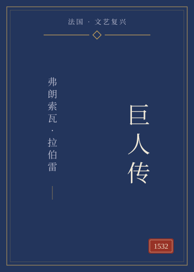
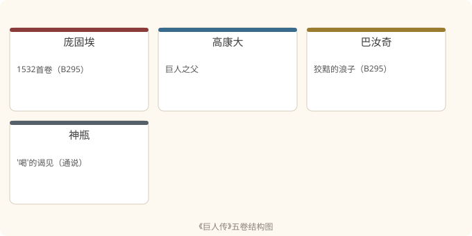

巨人传
一、基本信息
| 作者 | 弗朗索瓦·拉伯雷 |
|---|---|
| 成书/出版 | 1532—1564年出版（Britannica：The five novels……published between 1532 and 1564——B295） Francois Rabelais — Encyclopaedia Britannica（百科全书） |
| 国别/地区 | 法国 |
| 时代 | 近代 · 文艺复兴 |
| 体裁 | 长篇小说（五卷） |
| 语言 | 法语 |

《巨人传》五卷结构图（主题·结构图）
二、创作背景
Britannica（B295）：'The five novels that make up Gargantua and Pantagruel——although authorship of the fifth is disputed'（五卷、第五卷归属有争议）；Pantagruel (1532) 'condemned by the Sorbonne in Paris as obscene. It became a popular success'；'Rabelais used scatology aesthetically, not gratuitously'（B295）。
讽刺对象（B295）：'social institutions, dogmas, educational traditions, and philosophical methodologies'。
三、内容脉络
巨人父子：高康大与庞大固埃——'神瓶'的谒见与'rinkyhorn'（通说待核）。
巴汝奇：'cunning and witty rogue'（B295：first appears in the first novel——通说待核）。
'特来美修道院'：'做你想做的'（通说待核）。
四、主要人物表
| 人物 | 身份 | 说明 |
|---|---|---|
| 高康大 | 巨人 | 庞固埃之父（B295） |
| 庞大固埃 | 巨人 | （B295） |
| 巴汝奇 | companions | 'cunning and witty rogue'（B295） |
五、主题与艺术特点
- '审美化的粗俗'（B295：scatology aesthetically）。
- 对制度、教条、教育传统的讽刺（B295）。
- 人文主义的'直觉与好奇心'（B295：nobility and boundless curiosity——语境）。
六、影响与评论
- Britannica：'a lasting place in the history of 16th-century French literature'（B295）。
Francois Rabelais — Encyclopaedia Britannica（百科全书） - Britannica：'Rabelaisian'一词的误导——粗俗是审美的（B295）。
Francois Rabelais — Encyclopaedia Britannica（百科全书）
七、阅读建议
难点
- 五卷顺序（庞固埃在前！）。
- 16世纪法语双关。
- 《巨人传》（人民文学出版社/上海译文出版社版本，通说待核）。
- 法文原版（公有领域）。
先读《庞固埃》（先出版）或《高康大》（先叙事）。
八、待核实
- 五卷出版年表（1532/1534/1546/1552/1564）核对。
- '特来美'修道院与'做你想做的'原文待核。
- 第五卷归属争议待核。